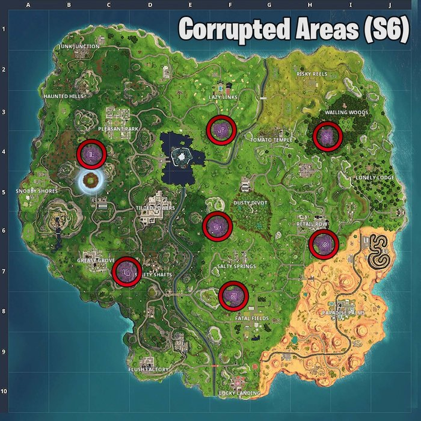
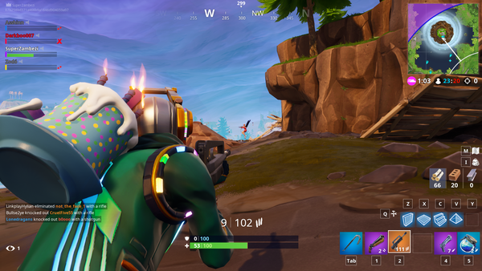

Fortnite Week 2 Challenges - 50m Elimination, Corrupted Areas Map, and Shadow Stones Locations - Season 6
Fortnite Week 2 Challenges of the Season 6 Battle Pass are almost here and our features the locations and map for the corrupted areas challenge. Clear at least four of the seven challenges to earn 5,000XP. This set will be released on October 4, 2018.
Free Challenges
Visit all of the Corrupted Areas
There are seven corrupted areas on the updated Season 6 map and your job is to visit each one. Thankfully, they are very easy to spot and large enough to quickly find them. Each corrupted zone has a rune at the center from last season's cube. Here's a map of all seven corrupted area locations:

Use a Shadow Stone in different matches
Use a total of three Shadow Stones, each in a different match. Thankfully, plenty of Shadow Stones appear at each of the corrupted zones. Use our map from the previous challenge for the locations of each Shadow Stone spawn area.
Despite being disabled for the majority of the first week of Season 6, Shadow Stones can once again be found at corrupted areas!
Stage 1: Deal damage with standard Assault Rifles to opponents
Multiple smaller challenges within this challenge. The first is to deal
200 damage using standard Assault Rifles to opponents. After completing this challenge, a new stage of the challenge will appear after the match is over. Here is the list of all three stages:
- Stage 1:
Deal damage with standard Assault Rifles to opponents
- Stage 2:
Deal damage with standard Burst Assault Rifles to opponents
- Stage 3:
Deal damage with standard Suppressed Assault Rifles to opponents
Battle Pass Challenges
Eliminate an opponent from at least 50m away

Defeat a single enemy from 50m away. So, what does this measurement actually mean? A single building segment is about 5m. The enemy you need to defeat should be roughly ten building segments away. You'll want to avoid short range weapons like shotguns and SMGs. Instead, sue an Assault Rifle or better, a sniper. Play Soaring 50's to better your chances of getting the drop on someone!
Deal damage with Pistols to opponents.
Deal
500 damage using only Pistols.
The second multi-stage challenge has you defeating enemies with specific Sniper Rifles. Here are all three stages:
- Stage 1:
Deal damage with Hunting Rifles to opponents
- Stage 2:
Deal damage with Bolt-Action Sniper Rifles to opponents
- Stage 3:
Deal damage with Heavy Sniper Rifles to opponents